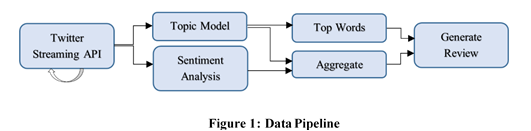

Final Project for CPSC 503 - Computational Linguistics
coded using: Java, MALLET, and Stanford NLP.
Abstract — The goal of this paper is to investigate the use of different Topic Modelling techniques to accurately label Twitter data about a spe-cific item for the purpose of generating an aggregated user review. The latent topics will be discovered using two separate tech-niques, Latent Dirichlet Allocation and Di-richlet Multinomial Mixture. Once informa-tive labels have been created, the documents belonging to those topics can be scored us-ing Sentiment Analysis. Corpora will be generated using the Twitter Streaming API filtered by an item we wish to research. Short text produced by character limited tweets tend to be very noisy and data sparsi-ty becomes a serious problem. Techniques will be discussed to overcome some of these issues.
